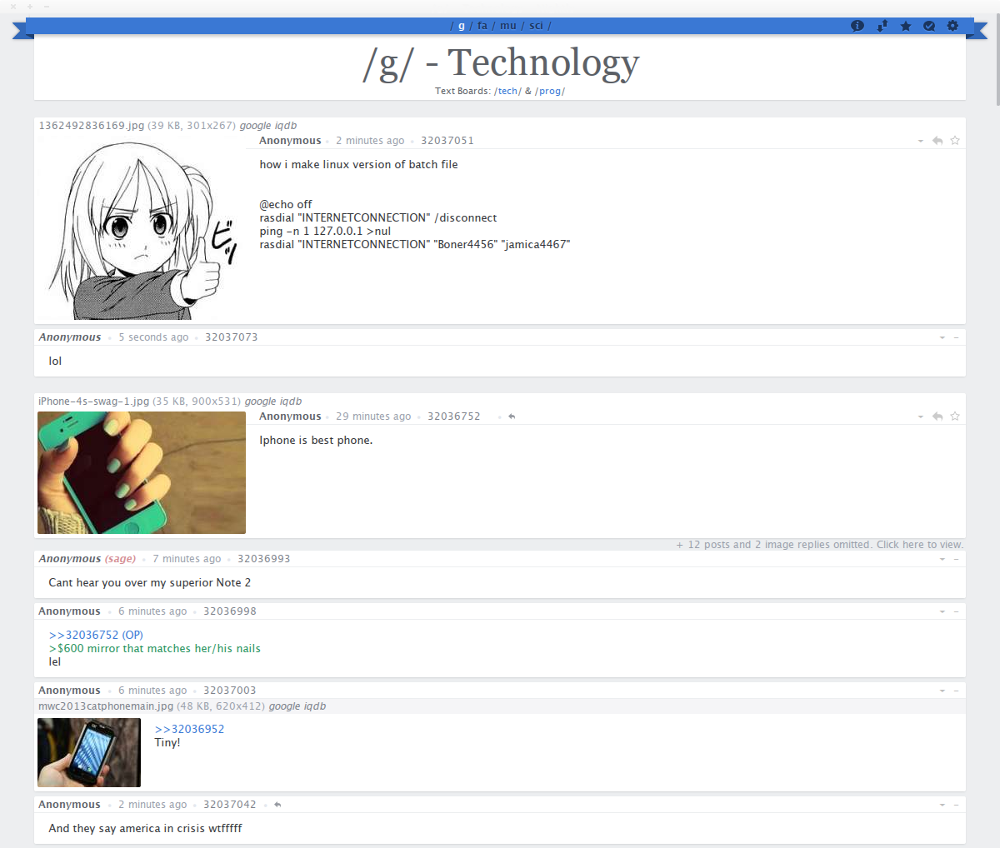
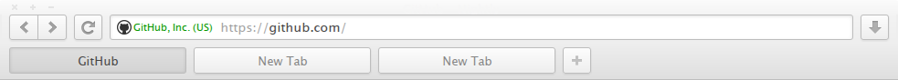
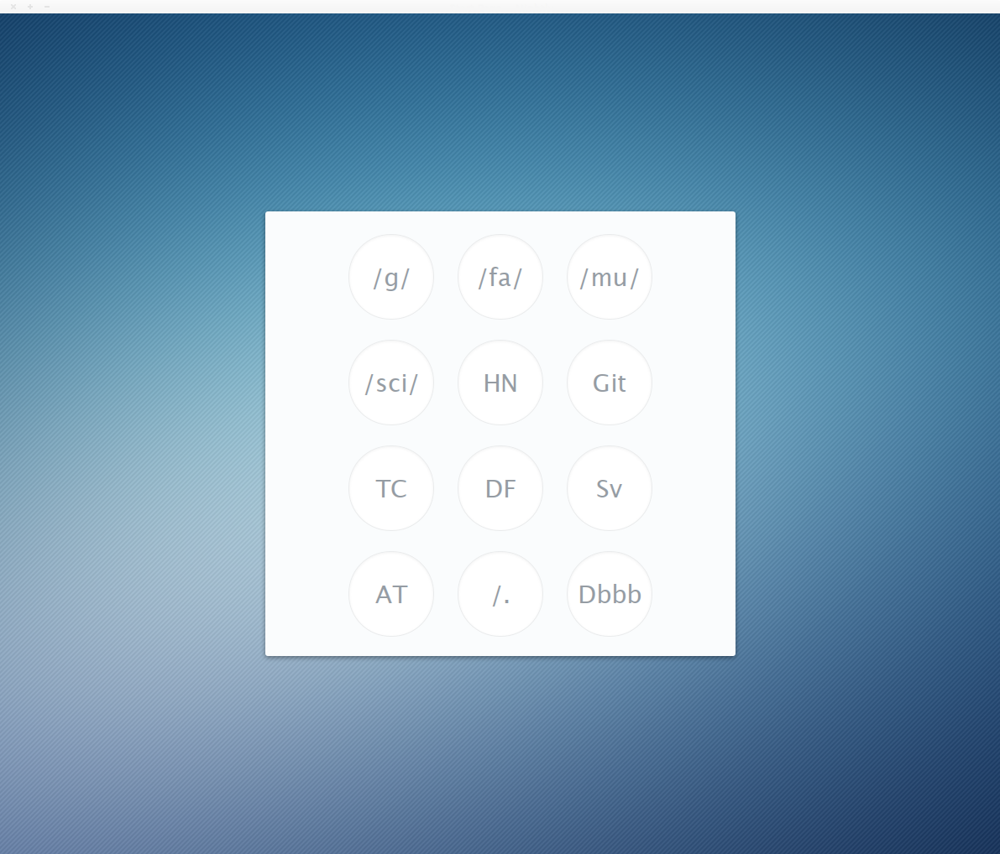
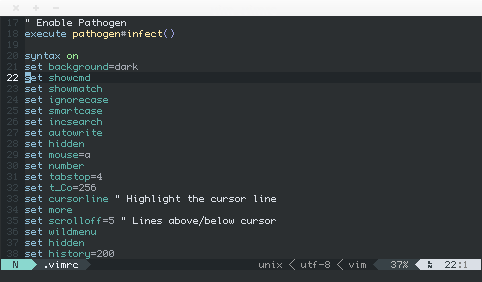

Some of my configuration files and user styles.
Many are for a GNU/Linux environment, while others have only been tested for Firefox and GNU/Linux.
Note that these are provided without any guarantee of support: they're made for myself, and my principal aim is to get them working with my own setup. Use at your own risk.
View on GitHub
4chan Clean
My newest 4chan userstyle, which aims to reduce visual clutter and make navigation as compact as possible. It makes heavy use of elements that only show on hover and of transitions, and depends on 4chan X.

4chan Ribbon
An older 4chan userstyle that adds a fixed ribbon containing the navigation at the top of the page, and keeps interactive elements clearly visible. It depends on 4chan X.
Note: Since I don't use it anymore, it won't be updated very often.

userChrome
A theme for Firefox which affects its user interface. It has been tested for GNU/Linux, but since Firefox's interface is treated differently on other operating systems, it may require some tweaking to get to display correctly on those platforms.

Start page
A simple web page, which appears every time a new tab is opened and gives easy access to predefined websites. The links and background are easily changeable to suit the user.

Themes
A set of themes based on Faience, with tweaks like entirely new window decorations and fitting gradients, different overlay searchbar and workspace switcher, fixed notification pane, etc.
Check it out
Vim
Various configurations files relating to Vim: my .vimrc, a color scheme to work with my terminal colors, and a tweaked Powerline color scheme that uses the terminal's colors instead of those defined by default.

{kind=link}
{kind=link}
{kind=link}
{kind=link}
{kind=link}
{kind=link}